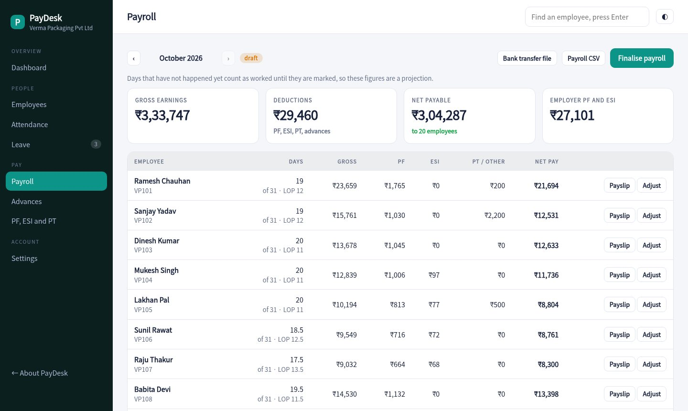
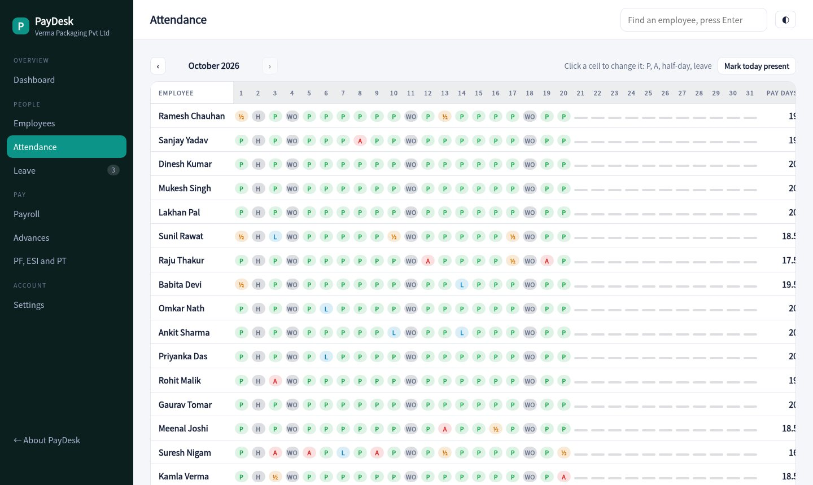
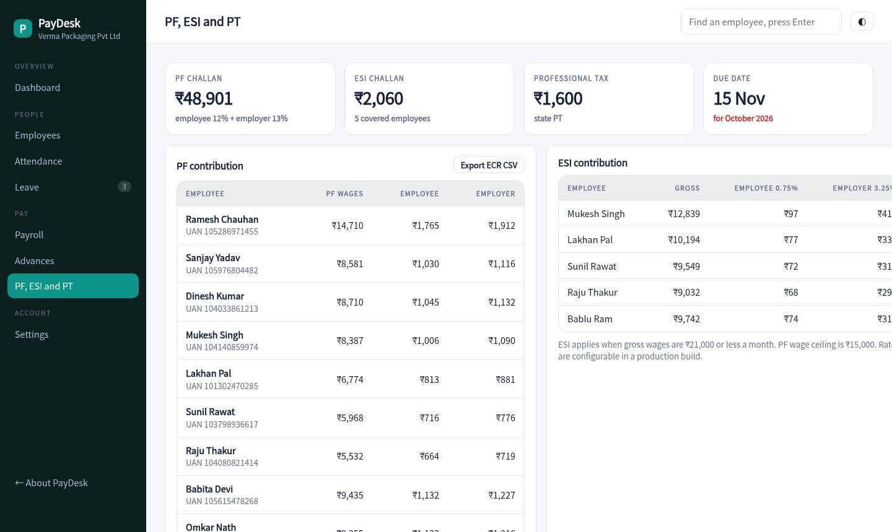

Mark attendance, approve leave and run payroll in minutes. PF, ESI and professional tax are worked out, payslips are ready to print and the bank file is one click.

A full month for every employee. Click a cell to mark present, absent, half day or leave. Sundays and holidays fill themselves.
Casual, sick and earned leave with yearly balances. Approving a request marks the attendance for you.
Pay days, loss of pay, overtime, bonus, advances and statutory deductions are calculated per person. Adjust any line before you finalise.
Contribution amounts for employee and employer, the PF wage ceiling, the ESI limit and professional tax, with an ECR style export.
A clean printable payslip for each person and a transfer file in the layout your bank expects.
Staff punch in, see their payslips, check leave and apply from a phone. Managers see requests in the console.
Review the numbers, adjust overtime or deductions, finalise, then mark paid. Advance recoveries come off by themselves.
One row per person and one column per day, with pay days totalled at the end.

PF, ESI and professional tax totals for the month with the due date, plus a PF export you can hand to your CA.

Enter basic, HRA and allowances, plus UAN and bank details. Mark who is under PF and ESI.
Attendance and leave build up through the month from the console or the employee app.
Finalise payroll, download the bank file, share payslips and pay the challans.
Sample pricing for this concept build.
Yes. PF is worked out on basic up to the wage ceiling and ESI applies when gross is within the limit. Rates and limits can be set in a production build.
Yes. Absences reduce pay days, half days count as half, and weekly offs and holidays are paid.
From the employee app on their phone, or by a WhatsApp message that you send from the payroll screen.
No. The company, employees and attendance are generated for a made-up packaging firm.
Open this month's payroll, adjust a line, finalise it and print a payslip.
Open the payroll app